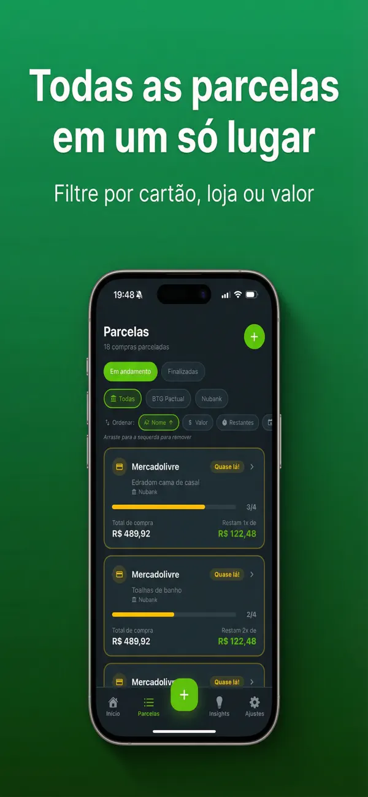
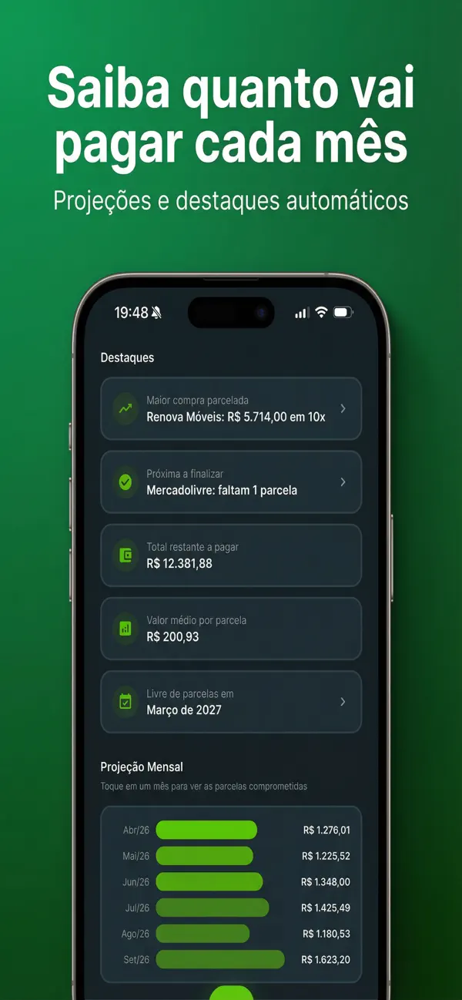

Onde as compras parceladas aparecem na fatura (o que significa 3/12)
Se você quer saber como ver compras parceladas no cartão de crédito, o primeiro lugar para olhar é a própria fatura. Cada compra parcelada aparece nos lançamentos com o nome da loja, o valor da parcela e uma numeração como 3/12, PARC 03/12 ou 3 de 12: o primeiro número é a parcela cobrada agora; o segundo, o total de parcelas.
"LOJA TAL 03/12 — R$ 149,90" significa que você paga a terceira de doze parcelas de R$ 149,90. A compra volta nas próximas nove faturas, com o contador avançando, até chegar em 12/12 e sumir.
O detalhe que confunde muita gente: a fatura só mostra a parcela daquele mês. Ela não traz, em lugar nenhum, o total que falta pagar de todas as compras somadas, nem quando cada uma termina — para isso, é preciso olhar compra por compra ou usar um método automático, como veremos adiante.
Como ver parcelas no app de cada banco: Itaú, Bradesco, BB, Inter e C6
Os caminhos mudam com as atualizações, mas a lógica é a mesma em todos os bancos: entre na área do cartão, abra a fatura e toque na compra para ver o parcelamento.
Itaú
No app Itaú, acesse a área de cartões (no menu de produtos) e abra a fatura atual. Na linha do tempo de lançamentos, cada compra mostra data, valor e, quando é parcelada, a indicação da parcela; toque no lançamento para ver os detalhes. Veja o passo a passo completo do Itaú.
Bradesco
No app Bradesco Cartões (ou na área de cartões do app principal), abra a fatura do cartão. As compras parceladas aparecem com a numeração da parcela, e a área da fatura também permite consultar lançamentos que ainda vão cair nos próximos meses.
Banco do Brasil
No app BB, procure a fatura do cartão na área de extratos ou na área do próprio cartão. Toque em uma compra parcelada para abrir os detalhes, onde costuma aparecer a opção de ver (e até antecipar) as parcelas. Vale saber: em geral, as parcelas futuras só entram na fatura quando chega o mês delas.
Inter
No Super App do Inter, entre na aba de cartões e abra a fatura. Dá para navegar entre faturas passadas, atual e futuras; cada compra parcelada aparece no histórico com o valor da parcela e a loja, e os detalhes mostram o número de parcelas. Detalhes no guia de compras parceladas no Inter.
C6 Bank
No app do C6, toque na aba de cartões e abra a fatura. Ali você confere os lançamentos do mês e navega para as faturas seguintes, onde as parcelas futuras vão aparecendo; toque na compra para ver o parcelamento.
Cartão roxinho? Veja o passo a passo para ver compras parceladas no Nubank.
Como saber quantas parcelas faltam no cartão
A conta é simples: total de parcelas − parcela atual = parcelas restantes. Se a fatura mostra "04/10", faltam 6 parcelas depois desta. Alguns apps de banco já mostram isso nos detalhes da compra.
O trabalho de verdade é fazer isso para todas as compras. Uma fatura cheia pode ter dez ou quinze compras parceladas em estágios diferentes — e se você usa mais de um cartão, a visão fica fragmentada em apps que não conversam entre si.
💡 Dica: ao revisar a fatura, marque as compras na última ou penúltima parcela: são elas que vão liberar espaço no orçamento — e no limite — nos próximos meses.
Como calcular quanto ainda falta pagar das parcelas
Para saber quanto falta pagar de uma compra: valor da parcela × parcelas restantes. Exemplo: parcela de R$ 149,90, você está na 4 de 10 → faltam 6 × R$ 149,90 = R$ 899,40.
Para saber o total comprometido, repita a conta para cada compra e some tudo. Esse é o valor que já está gasto e vai drenar as próximas faturas — e que, na maioria dos cartões, segue ocupando seu limite até ser quitado.
Para manter esse controle manualmente, uma planilha resolve bem: uma linha por compra, colunas para valor da parcela, parcela atual, total e mês de término. Montamos um modelo pronto no guia da planilha de controle de parcelas do cartão.
Deixe a IA organizar suas parcelas
Tire uma foto da fatura e o Parceladinho mostra quanto falta pagar, parcela por parcela. Teste grátis por 3 dias.
Quando cada parcela acaba: a projeção mês a mês
Saber quanto falta é metade da resposta; a outra metade é quando cada parcela termina. Para montar a projeção, conte os meses restantes de cada compra: uma compra em 04/10 na fatura de julho de 2026 vai até a fatura de janeiro de 2027. Colocando tudo em um quadro mês a mês, você enxerga as faturas futuras diminuindo — e descobre em qual mês fica livre de tudo.
Alguns apps de banco mostram as próximas faturas (Inter e C6, por exemplo), mas cada um só enxerga o próprio cartão. Com parcelas espalhadas em mais de um banco, a projeção completa só existe se você mesmo consolidar — na planilha ou em um app dedicado.
O jeito automático: foto da fatura e a IA extrai tudo
Todo o trabalho acima — achar cada compra, subtrair parcelas, multiplicar valores, projetar mês a mês — é o que o Parceladinho faz sozinho. Ele é um app para controlar parcelas do cartão, feito só para isso, e funciona em três passos:
- Envie a fatura: tire uma foto, escolha uma imagem da galeria ou anexe o PDF, de qualquer banco.
- A IA identifica as parcelas: loja, valor e parcela atual/total de cada compra parcelada.
- Veja tudo no dashboard: total comprometido, quanto você paga no próximo mês e as parcelas por cartão (Nubank, Inter, C6...), cada compra com barra de progresso e alerta quando está acabando.

A projeção mês a mês vem pronta nos insights: toque em um mês do gráfico e veja o que vence nele, além da data em que você fica "livre de parcelas", a maior compra parcelada e a média por parcela. Dá para filtrar por cartão, loja ou status, adicionar parcelas manualmente e editar valores e datas — e um lembrete mensal avisa a hora de enviar a fatura nova.

Dois pontos de honestidade: o app é só para iPhone (iOS 15.1+) e não se conecta automaticamente aos bancos — a importação é por foto ou PDF mesmo. A troca é consciente: sem Open Finance e sem senha de banco, os dados ficam só no seu aparelho. Apps como Mobills e Organizze são ótimos para orçamento geral; o Parceladinho é a ferramenta dedicada a parcelas — comparamos as opções no guia do melhor app para controlar parcelas em 2026.
O Parceladinho Pro tem 3 dias de teste grátis e cancelamento direto na App Store — os planos e valores atuais aparecem direto no app.
Perguntas frequentes sobre compras parceladas
Onde vejo quantas parcelas faltam de uma compra no cartão?
Na fatura, cada compra parcelada aparece com a parcela atual e o total, como 3/12. Subtraia um número do outro: 12 − 3 = 9 parcelas restantes. Nos apps dos bancos, toque na compra para ver os detalhes do parcelamento.
A fatura mostra o total que ainda falta pagar de todas as parcelas?
Não. A fatura mostra apenas as parcelas cobradas naquele mês. Para saber o total restante, multiplique o valor de cada parcela pelas parcelas que faltam e some tudo — ou use um app como o Parceladinho, que calcula isso automaticamente a partir de uma foto da fatura.
Compra parcelada ocupa o limite do cartão de uma vez?
Em geral, sim: o valor total é comprometido no limite no momento da compra e vai sendo liberado conforme as parcelas são pagas. A regra exata pode variar de banco para banco.
O Parceladinho funciona com fatura de qualquer banco?
Sim. A leitura é por foto, imagem da galeria ou PDF da fatura, então funciona com Nubank, Itaú, Bradesco, Inter, C6 e outros. O app é para iPhone (iOS 15.1 ou superior) e tem 3 dias de teste grátis.
Resumindo: a fatura mostra o "3/12" de cada compra, e a conta de quanto falta é valor da parcela × parcelas restantes. Para pular a parte manual, conheça o Parceladinho — uma foto da fatura e todas as parcelas organizadas.